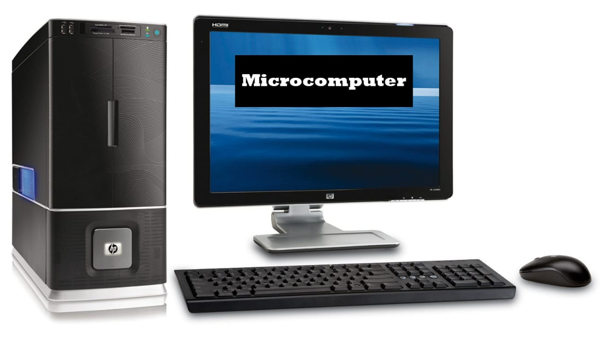
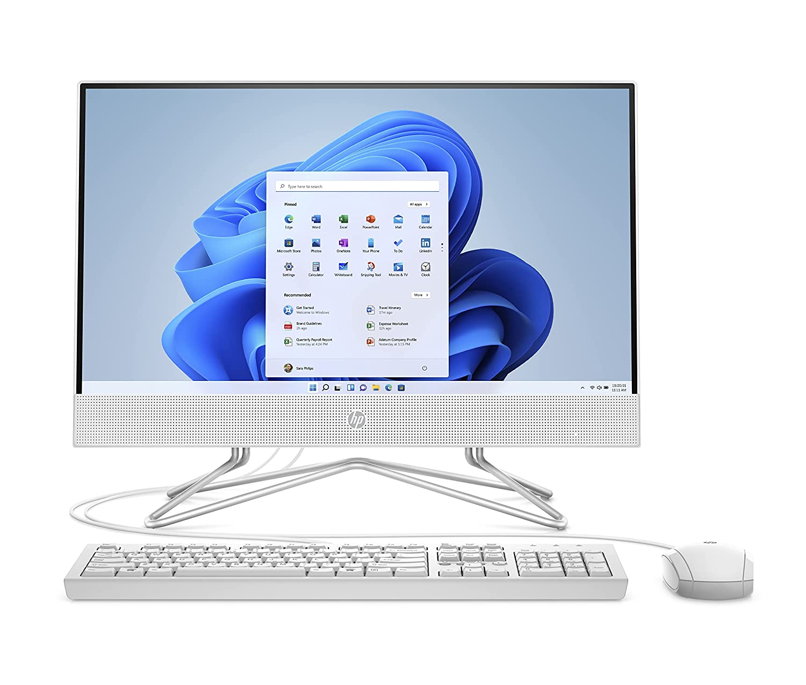
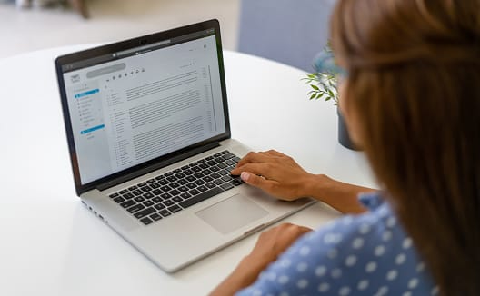

Micro-computer

A microcomputer is a complete computer on a small scale, designed for use by one person at a time.
An antiquated term, a microcomputer is now primarily called a personal computer (PC),
or a device based on a single-chip microprocessor. Common microcomputers include laptops and desktops.
Super-computer

A supercomputer is a computer with great speed and memory.
This kind of computer can do jobs faster than any other computer of its generation.
They are usually thousands of times faster than ordinary personal computers made at that time.
Desktop-computer

A desktop computer is a personal computer designed for regular use at a single location on or near a desk due to its size and power requirements.
The most common configuration has a case that houses the power supply, motherboard (a printed circuit board with a microprocessor
as the central processing unit, memory, bus, certain peripherals and other electronic components),
disk storage (usually one or more hard disk drives,
solid state drives, optical disc drives, and in early models a floppy disk drive);
a keyboard and mouse for input; and a computer monitor, speakers, and, often, a printer for output.
The case may be oriented horizontally or vertically and placed either underneath,
beside, or on top of a desk.
Laptop

A laptop, laptop computer, or notebook computer is a small, portable personal computer (PC) with a screen and alphanumeric keyboard.
Laptops typically have a clam shell form factor with the screen mounted on the inside of the upper lid and the keyboard on the inside of the lower lid, although 2-in-1 PCs with a detachable
keyboard are often marketed as laptops or as having a laptop mode.
Laptops are folded shut for transportation, and thus are suitable for mobile use.
[1] Its name comes from lap, as it was deemed practical to be placed on a person's lap when being used. Today, laptops are used in a variety of settings,
such as at work, in education, for playing games, web browsing, for personal multimedia, and for general home computer use.
Mini Computer
.jpeg)
minicomputer, computer that was smaller, less expensive, and less powerful than a mainframe or supercomputer but more expensive and more powerful than a personal computer.
Minicomputers were used for scientific and engineering computations, business transaction processing, file handling, and database management.
PDA Computer
.jpeg)
PDAs. Personal Digital Assistants (PDAs) are small networked computers that can fit in the palm of your hand. PDAs have evolved over the years, beginning with first-generation devices such as the Apple® Newton™ (Apple coined the term PDA) and PalmPilot™.
They offered features such as calendar and note-taking capability ...